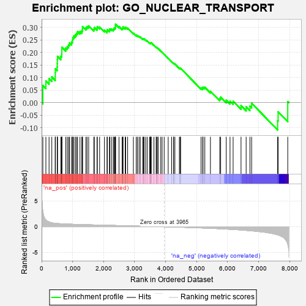
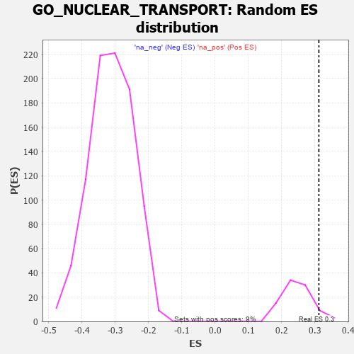

| | | Dataset | 7d |
| Phenotype | NoPhenotypeAvailable |
| Upregulated in class | na_pos |
| GeneSet | GO_NUCLEAR_TRANSPORT |
| Enrichment Score (ES) | 0.31203064 |
| Normalized Enrichment Score (NES) | 1.2583531 |
| Nominal p-value | 0.06593407 |
| FDR q-value | 0.44088602 |
| FWER p-Value | 1.0 |
Table: GSEA Results Summary

Fig 1: Enrichment plot: GO_NUCLEAR_TRANSPORT
Profile of the Running ES Score & Positions of GeneSet Members on the Rank Ordered List
| PROBE | GENE SYMBOL | GENE_TITLE | RANK IN GENE LIST | RANK METRIC SCORE | RUNNING ES | CORE ENRICHMENT | | 1 | SIX2 | | | 40 | 3.152 | 0.0680 | Yes |
| 2 | DESI1 | | | 138 | 1.332 | 0.0865 | Yes |
| 3 | SRSF9 | | | 240 | 0.950 | 0.0957 | Yes |
| 4 | NUP85 | | | 329 | 0.772 | 0.1024 | Yes |
| 5 | CPSF2 | | | 440 | 0.666 | 0.1039 | Yes |
| 6 | XPOT | | | 441 | 0.665 | 0.1193 | Yes |
| 7 | SUFU | | | 443 | 0.665 | 0.1346 | Yes |
| 8 | NXT2 | | | 502 | 0.628 | 0.1418 | Yes |
| 9 | NUP54 | | | 505 | 0.627 | 0.1561 | Yes |
| 10 | THOC1 | | | 507 | 0.627 | 0.1705 | Yes |
| 11 | NMD3 | | | 513 | 0.625 | 0.1843 | Yes |
| 12 | NEMF | | | 620 | 0.589 | 0.1845 | Yes |
| 13 | RBM4 | | | 649 | 0.576 | 0.1943 | Yes |
| 14 | TNPO3 | | | 651 | 0.576 | 0.2075 | Yes |
| 15 | XPO7 | | | 652 | 0.576 | 0.2209 | Yes |
| 16 | CPSF6 | | | 778 | 0.538 | 0.2175 | Yes |
| 17 | RAE1 | | | 827 | 0.524 | 0.2235 | Yes |
| 18 | NOL6 | | | 870 | 0.514 | 0.2301 | Yes |
| 19 | NSUN2 | | | 901 | 0.506 | 0.2380 | Yes |
| 20 | ZPR1 | | | 967 | 0.491 | 0.2411 | Yes |
| 21 | NOP9 | | | 993 | 0.485 | 0.2492 | Yes |
| 22 | CPSF1 | | | 1005 | 0.482 | 0.2590 | Yes |
| 23 | AKT1 | | | 1040 | 0.476 | 0.2657 | Yes |
| 24 | PHAX | | | 1089 | 0.466 | 0.2704 | Yes |
| 25 | NUP93 | | | 1127 | 0.459 | 0.2763 | Yes |
| 26 | NUP43 | | | 1160 | 0.453 | 0.2827 | Yes |
| 27 | CPSF3 | | | 1237 | 0.440 | 0.2833 | Yes |
| 28 | THOC3 | | | 1297 | 0.430 | 0.2857 | Yes |
| 29 | THOC6 | | | 1316 | 0.426 | 0.2933 | Yes |
| 30 | NRDE2 | | | 1320 | 0.425 | 0.3028 | Yes |
| 31 | NUP88 | | | 1429 | 0.404 | 0.2984 | Yes |
| 32 | U2AF2 | | | 1466 | 0.396 | 0.3030 | Yes |
| 33 | XPO4 | | | 1518 | 0.388 | 0.3056 | Yes |
| 34 | TNPO1 | | | 1684 | 0.359 | 0.2929 | Yes |
| 35 | XPO5 | | | 1700 | 0.357 | 0.2993 | Yes |
| 36 | NUP58 | | | 1787 | 0.340 | 0.2962 | Yes |
| 37 | THOC2 | | | 1796 | 0.338 | 0.3030 | Yes |
| 38 | NUP62 | | | 1871 | 0.324 | 0.3011 | Yes |
| 39 | DMAP1 | | | 2025 | 0.301 | 0.2887 | Yes |
| 40 | RBM27 | | | 2111 | 0.289 | 0.2846 | Yes |
| 41 | CPSF4 | | | 2118 | 0.288 | 0.2905 | Yes |
| 42 | SYK | | | 2186 | 0.278 | 0.2884 | Yes |
| 43 | THOC7 | | | 2198 | 0.277 | 0.2935 | Yes |
| 44 | SRSF1 | | | 2252 | 0.267 | 0.2929 | Yes |
| 45 | SRSF4 | | | 2311 | 0.258 | 0.2915 | Yes |
| 46 | SEC13 | | | 2330 | 0.256 | 0.2952 | Yes |
| 47 | U2AF1 | | | 2359 | 0.252 | 0.2975 | Yes |
| 48 | SYMPK | | | 2381 | 0.248 | 0.3005 | Yes |
| 49 | SLU7 | | | 2382 | 0.248 | 0.3063 | Yes |
| 50 | NCBP2 | | | 2383 | 0.248 | 0.3120 | Yes |
| 51 | SARNP | | | 2496 | 0.227 | 0.3031 | No |
| 52 | NXF1 | | | 2597 | 0.214 | 0.2953 | No |
| 53 | BAG3 | | | 2620 | 0.209 | 0.2974 | No |
| 54 | NUP50 | | | 2625 | 0.209 | 0.3017 | No |
| 55 | SRSF3 | | | 2696 | 0.199 | 0.2974 | No |
| 56 | PHB2 | | | 2712 | 0.197 | 0.3001 | No |
| 57 | RIOK2 | | | 2775 | 0.187 | 0.2965 | No |
| 58 | XPO1 | | | 2960 | 0.156 | 0.2767 | No |
| 59 | ABCE1 | | | 3051 | 0.143 | 0.2686 | No |
| 60 | CHP1 | | | 3089 | 0.138 | 0.2671 | No |
| 61 | SMG7 | | | 3141 | 0.131 | 0.2637 | No |
| 62 | RBM22 | | | 3182 | 0.125 | 0.2615 | No |
| 63 | NUP98 | | | 3261 | 0.112 | 0.2541 | No |
| 64 | SMG5 | | | 3285 | 0.108 | 0.2537 | No |
| 65 | SMAD3 | | | 3303 | 0.105 | 0.2540 | No |
| 66 | RBM8A | | | 3355 | 0.096 | 0.2497 | No |
| 67 | MED1 | | | 3405 | 0.089 | 0.2456 | No |
| 68 | CDK5 | | | 3480 | 0.080 | 0.2380 | No |
| 69 | UFM1 | | | 3506 | 0.077 | 0.2366 | No |
| 70 | UBR5 | | | 3518 | 0.074 | 0.2369 | No |
| 71 | HDAC3 | | | 3528 | 0.072 | 0.2375 | No |
| 72 | LSG1 | | | 3534 | 0.070 | 0.2385 | No |
| 73 | NOLC1 | | | 3623 | 0.056 | 0.2286 | No |
| 74 | DHX9 | | | 3693 | 0.044 | 0.2208 | No |
| 75 | NF1 | | | 3713 | 0.040 | 0.2193 | No |
| 76 | CASC3 | | | 3727 | 0.037 | 0.2186 | No |
| 77 | SRSF2 | | | 3759 | 0.033 | 0.2154 | No |
| 78 | SMG1 | | | 3843 | 0.021 | 0.2053 | No |
| 79 | RAB18 | | | 3886 | 0.013 | 0.2003 | No |
| 80 | PPM1A | | | 3953 | 0.002 | 0.1919 | No |
| 81 | DDX20 | | | 4083 | -0.021 | 0.1760 | No |
| 82 | ENY2 | | | 4195 | -0.041 | 0.1628 | No |
| 83 | RRS1 | | | 4256 | -0.051 | 0.1564 | No |
| 84 | PCID2 | | | 4258 | -0.051 | 0.1575 | No |
| 85 | RAN | | | 4299 | -0.059 | 0.1537 | No |
| 86 | SETD2 | | | 4443 | -0.084 | 0.1375 | No |
| 87 | LRRK2 | | | 4467 | -0.087 | 0.1366 | No |
| 88 | NXF2 | | | 4484 | -0.092 | 0.1367 | No |
| 89 | IPO7 | | | 5142 | -0.236 | 0.0587 | No |
| 90 | SMO | | | 5195 | -0.247 | 0.0578 | No |
| 91 | IPO5 | | | 5207 | -0.248 | 0.0621 | No |
| 92 | CDK1 | | | 5264 | -0.262 | 0.0611 | No |
| 93 | CBLB | | | 5445 | -0.306 | 0.0453 | No |
| 94 | MX2 | | | 5745 | -0.390 | 0.0163 | No |
| 95 | SRRM1 | | | 5775 | -0.398 | 0.0219 | No |
| 96 | AGFG1 | | | 5955 | -0.457 | 0.0097 | No |
| 97 | CALR | | | 6077 | -0.499 | 0.0059 | No |
| 98 | PSIP1 | | | 6177 | -0.531 | 0.0056 | No |
| 99 | MALT1 | | | 6432 | -0.634 | -0.0120 | No |
| 100 | TPR | | | 6597 | -0.709 | -0.0164 | No |
| 101 | GSK3B | | | 6719 | -0.768 | -0.0140 | No |
| 102 | NXT1 | | | 6774 | -0.797 | -0.0024 | No |
| 103 | IWS1 | | | 7613 | -1.587 | -0.0721 | No |
| 104 | PKD1 | | | 7628 | -1.611 | -0.0366 | No |
| 105 | WDR33 | | | 7939 | -3.452 | 0.0041 | No |
Table: GSEA details [plain text format]

Fig 2: GO_NUCLEAR_TRANSPORT: Random ES distribution
Gene set null distribution of ES for GO_NUCLEAR_TRANSPORT